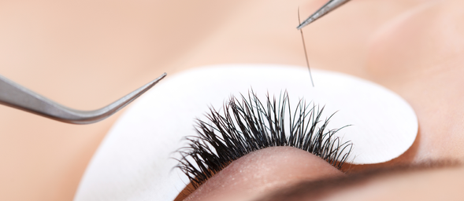
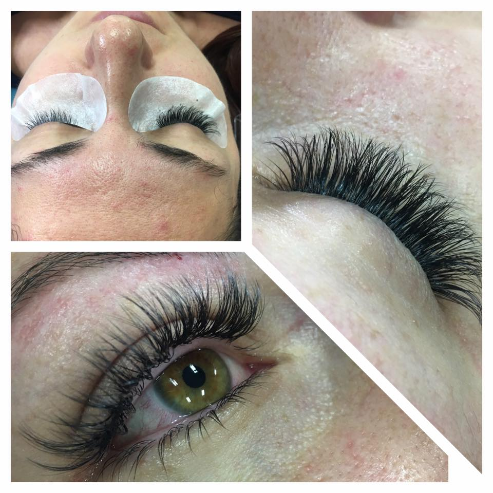
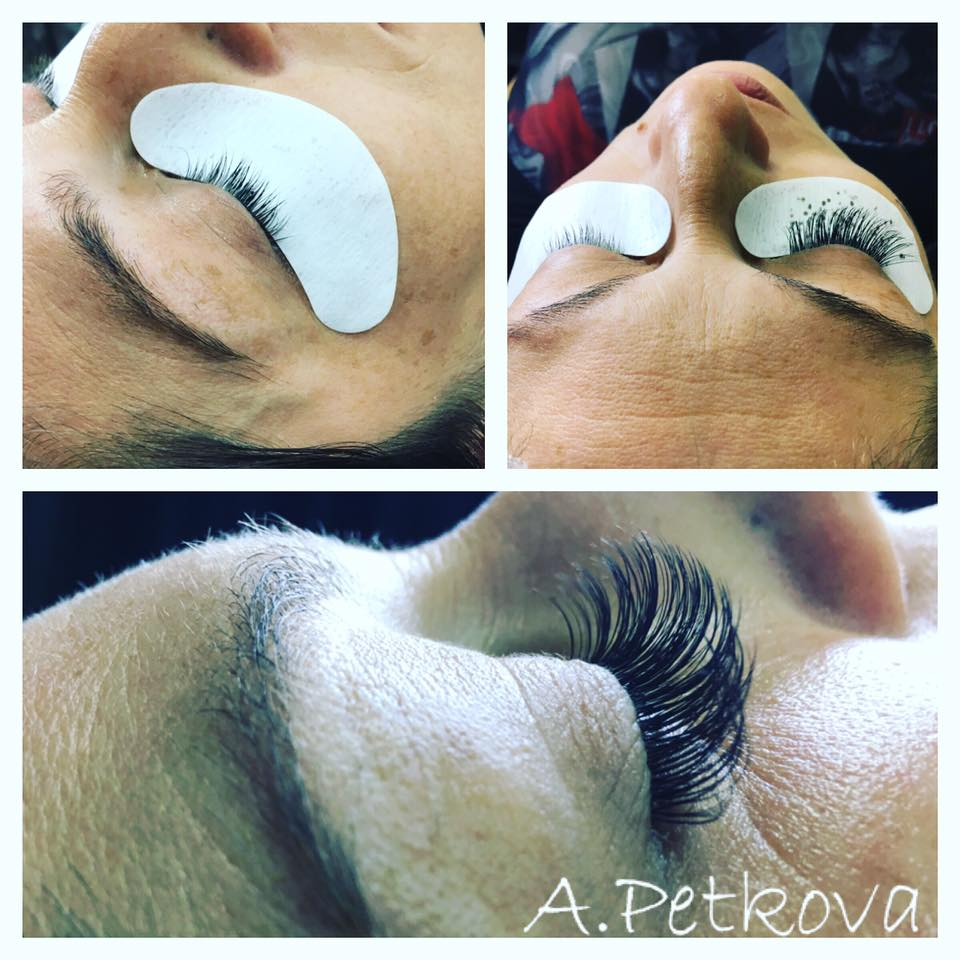

<div id="lashes">
    <div class="row">
        <div class="box">
            <div class="col-lg-12">
                <hr>
                <h2 class="intro-text text-center">
                    <strong>Удължаване и сгъстяване на мигли по технология "косъм по косъм"</strong>
                </h2>
                <hr>
            </div>
            <div class="col-lg-5">
                
            </div>
            <div class="col-lg-7">
                <p>Технологията “Косъм по косъм” е нов метод с помощта на който се увеличава дължината и обема на естествените
                    миглите, без това да им навреди. Копринените мигли се апликират една по една без да имат директен контакт
                    с клепача. За постигане на по-добър резултат дължината на миглите варира между 8-15 мм. В отговор на
                    различните предпочитания, миглите са с различен обем и цветове.</p>
            </div>
            <div class="row">
                <div class="col col-lg-12">
                    <h4> Какво представлява поставянето на мигли?</h4>
                    <div>
                        <p>Косъмчетата се прикрепят върху самите естествени мигли, а не на кожата на клепача, като по този начин
                            миглите се удължават и стават по-гъсти, следвайки вашата собствена естествена линия. Всеки екстеншън
                            се извива така, че да прилича максимално на оригиналните мигли.</p>
                        <p>Ако имате редки вежди, частична липса на косъмчета в тях или не ви харесва формата, която имат, време
                            е да се поинтересувате за микроблейдинг. Не е подходящ обаче, ако сте с много мазна кожа, имате
                            спукани капиляри или дерматит.</p>
                        <h4>Безопасни ли са екстеншъните за мигли?</h4>
                        <p>Те са минали през много тестове, проби и дълги периоди на употреба преди да стигнат до вас. Изводите
                            са, че са безвредни и за естествените ви мигли, и за клепачите ви. Дори материалите, от които
                            е направено лепилото за апликиране на миглите, са включени в състава на множество хирургични
                            лепила, използвани за безшевно затваряне на оперативни рани.</p>
                    </div>
                </div>
            </div>
            <div class="row">
                <div class="col-lg-12">
                    <h4>Колко време отнема поставянето?</h4>
                    <p>За да се поставят екстеншъните както трябва, са необходими между 120 и 190 минути.</p>
                </div>
            </div>
            <div class="row">
                <div class="col-lg-12">
                    <h4> Колко често ще се налага поддръжка ?</h4>
                    <p>ЗИздръжливостта на миглите ви се определя и от ежедневните ви навици: ако плувате или ходите на сауна
                        често, или ако имате навик много да докосвате очите си, е по-вероятно да скъсите живота на екстеншъните
                        си. Освежаване и поправяне на изкуствените мигли (попълват се дупки на места, където миглите са поизпадали)
                        се препоръчва иначе средно на 2 – 3 седмици.</p>
                </div>
            </div>
            <div class="row">
                <div class="col-lg-6">
                    <h4>Резултат след поставянето на миглите</h4>
                    <p> Екстеншъните за мигли осигуряват онова малко допълнително очарование, от което се нуждаете за някой специален
                        повод, ала тъй като изглеждат толкова естествено, спокойно можете да ги направите и част от ежедневния
                        си тоалет.При правилно поставяне и поддръжка миглите имат трайност между 30-60 дни.</p>
                </div>
                <div class="col-lg-6">
                    <span></span>
                    <span></span>
                </div>
            </div>
            <div class="row">
                <div class="col-lg-12">
                    <h4>Важни препоръки:</h4>
                    <p>Опазете миглите сухи за 24 часа;</br> Използвайте продукти за почистване на грим само на водна основа
                        – всичко мазно е забранено;</br> За да подсушите очите си след миене, използвайте хартиени салфетки,
                        като започнете с нежен натиск отдолу нагоре;</br> памучните тампони за грим е добре да се избягват;</br>
                        Не излагайте новите си мигли на силна топлина;</br> Не къдрете изкуствените си мигли с извивачка
                        за мигли. Те вече имат първоначална естествена извивка и всяко допълнително извиване е излишно и
                        може да повреди структурата им;</br> Не дърпайте миглите си, защото това може да причини окончателно
                        падане на естествените ви мигли;</br> Ако наистина е налага да използвате спирала, то ползвайте единствено
                        такава, предназначена за изкуствени мигли. Останалите спирали съдържат съставки, които разтварят
                        лепилото за мигли и вероятно вашите не след дълго ще паднат;</br> Ако все пак решите да си сложите
                        спирала, я поставете само от центъра на миглите до върха, за да избегнете зоната на корените;</br>
                        За да почистите грима около очите си, е добре да използвате специален апликатор за почистване плюс четка за разресвне и разделяне
                        на миглите;
                    </p>
                </div>
            </div>